Amendment #177 (S.O. 893(E), 1985)
79 changes: 2 to the First Schedule, 77 to the Second Schedule. 73 applied6 not applied
What it did to the ministries
- renamedMinistry of Personnel and Training, Administrative Reforms and Public Grievances and Pension is renamed Ministry of Personnel, Public Grievances and Pensions change 1, 68, 69 · histories: Personnel
- grewMinistry of Commerce grows from 20 to 25 subjects change 7 · histories: Commerce
- grewMinistry of Transport grows from 44 to 55 subjects change 2, 72, 73, 74, 75, 76 · histories: Transport
The order, page by page
Page 1 of 14
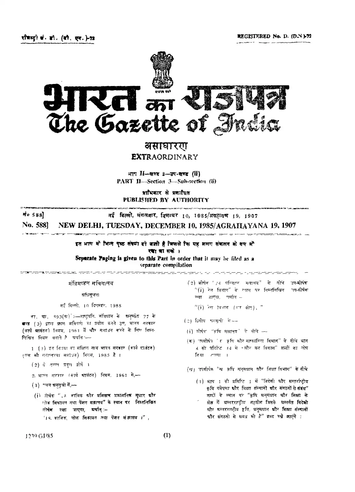
Page 2 of 14
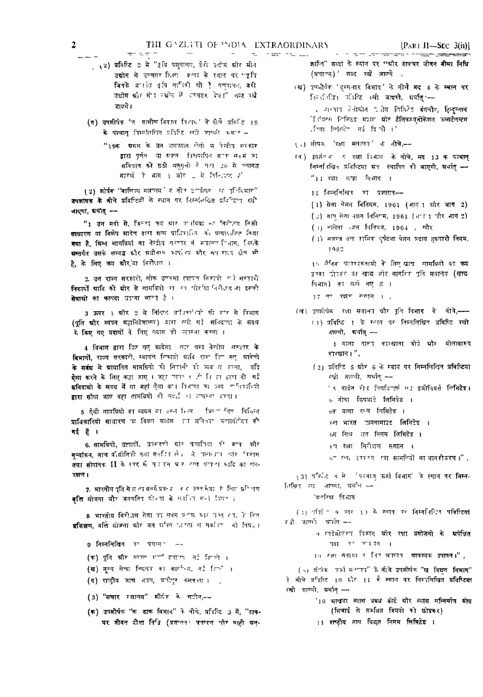
Page 3 of 14
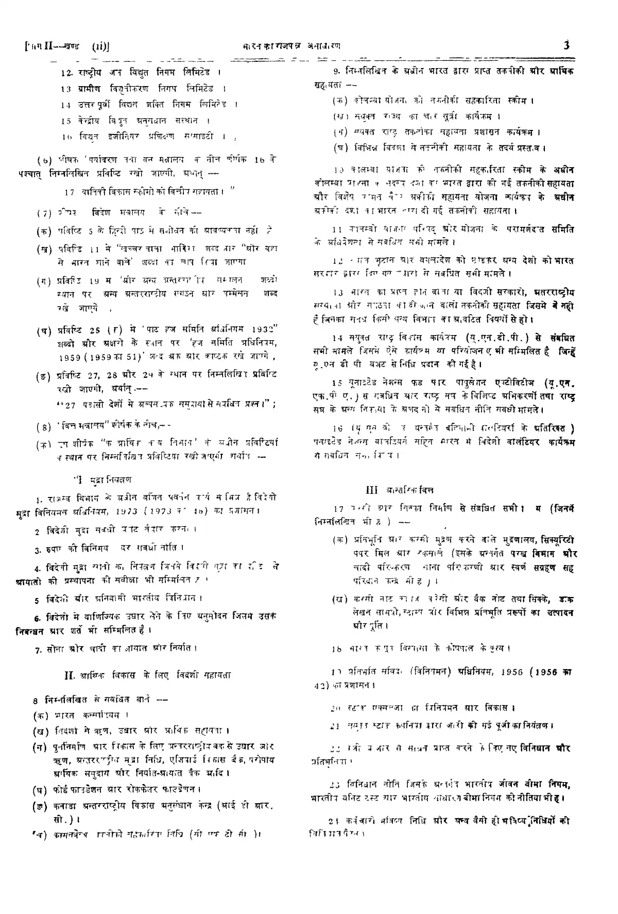
Page 4 of 14
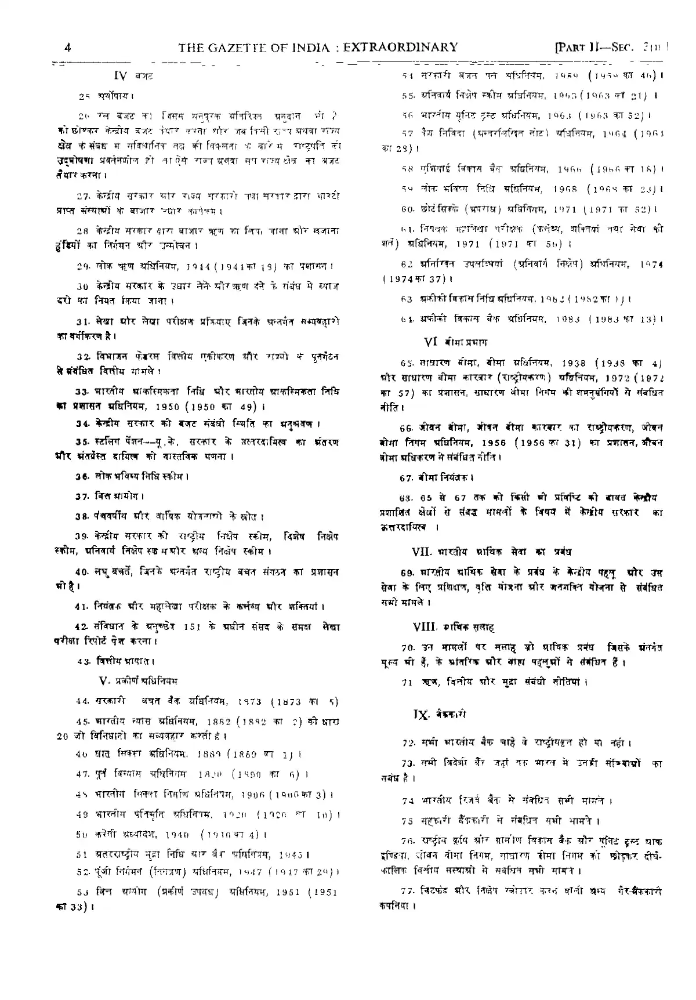
Page 5 of 14
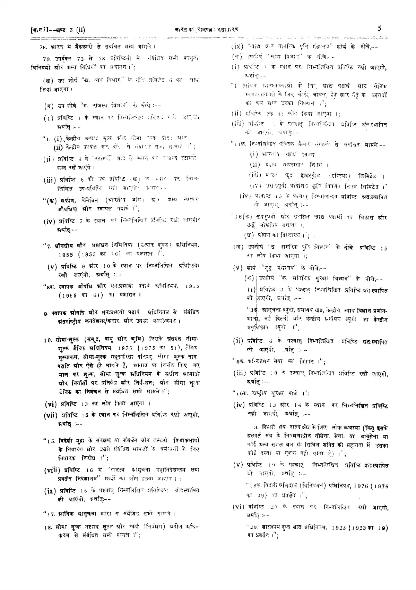
Page 6 of 14
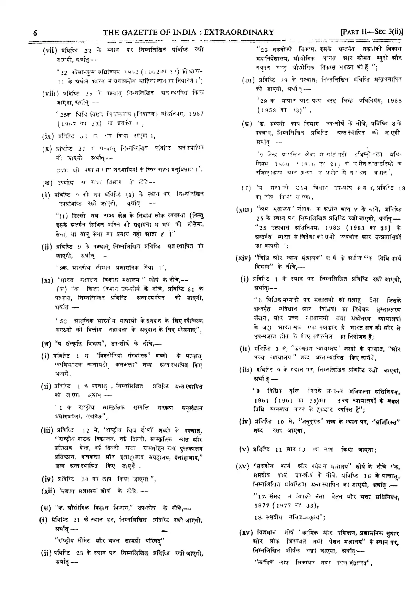
Page 7 of 14
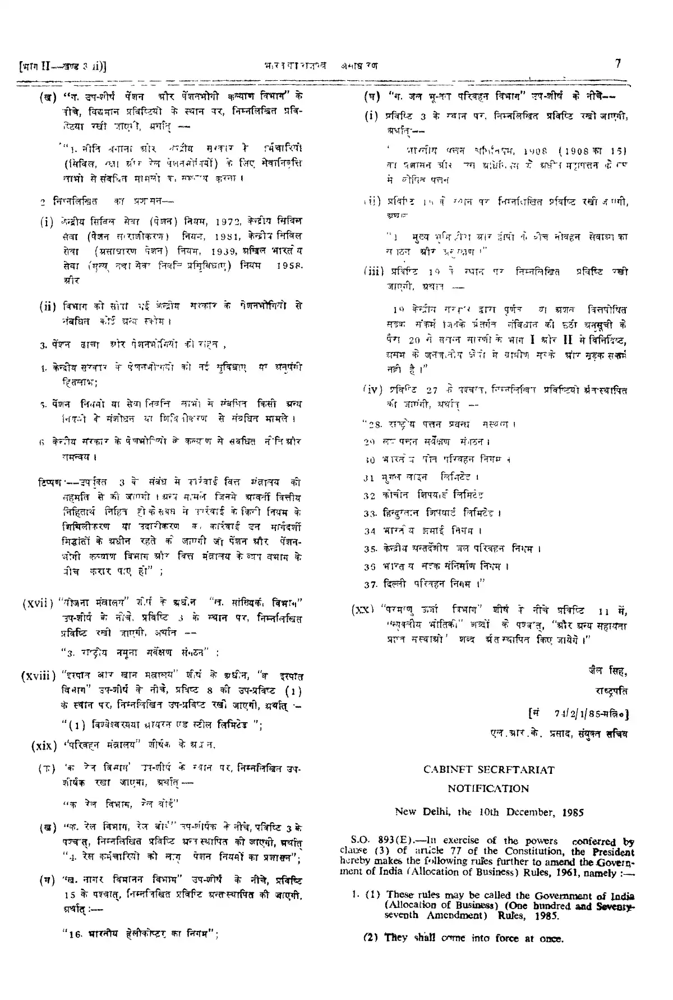
Page 8 of 14
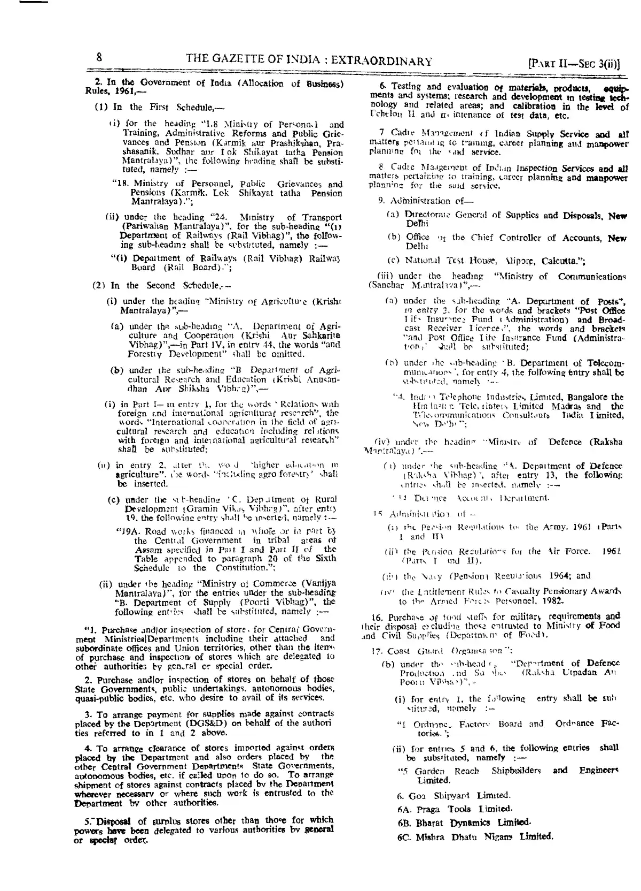
123456789101112Schedule 1 › Ministry of Personnel and Training, Administrative Reforms and Public Grie- vances and Pension
- 18. Ministry of Personnel, Public Grievances and Pensions
applied at schedule 1 › ministry 18 in the Rules after #177
Schedule 1 › Ministry of Transport › Department of Railways
- i. Department of Railways (Rail Vibhag) Railway Board (Rail Board).
applied at schedule 1 › ministry 24 › department i in the Rules after #177
Schedule 2 › Ministry of Agriculture › Department of Agri- culture and Cooperation › Part IV › entry 44
for “and Forestry Development” read “”
applied at schedule 2 › ministry MINISTRY OF AGRICULTURE › department A › part IV › entry 44 in the Rules after #177
Schedule 2 › Ministry of Agriculture › Department of Agri- cultural Research and Education › Part I › entry 1
for “Relations with foreign and international agriculturaƒ research” read “International cooperation in the field of agri- cultural research and education including relations with foreign and international agricultural research”
not applied (the change could not be placed in the Rules as read; see How this document was read)
Schedule 2 › Ministry of Agriculture › Department of Agri- cultural Research and Education › entry 2
for “higher education, in agriculture” read “higher education, in agriculture including agro forestry”
applied at schedule 2 › ministry MINISTRY OF AGRICULTURE › department B › part I › entry 2 in the Rules after #177
after Schedule 2 › Ministry of Agriculture › Dep.itment of Rural Development › entry 19
- 19A. Road works financed in whole or in part by the Central Government in tribal areas of Assam specified in Part I and Part II of the Table appended to paragraph 20 of the Sixth Schedule to the Constitution.
applied at schedule 2 › ministry MINISTRY OF AGRICULTURE › department C › entry 19A in the Rules after #177
states inferred loose
Schedule 2 › Ministry of Commerce › Department of Supply
- 1. Purchase and/or inspection of store for Central Government Ministries Departments including their attached and subordinate offices and Union territories, other than the item"> of purchase and inspection of stores which are delegated to other authorities by general or special order.
- 2. Purchase and/or inspection of stores on behalf of those State Governments, public undertakings. autonomous bodies quasi-public bodies, etc. who desire to avail of its services.
- 3. To arrange payment for supplies made against contracts placed by the Department (DGS&D) on behalf of the authori ties referred to in 1 and 2 above.
- 4. To arrange clearance of stores imported against orders placed by the Department and also orders placed by the other Central Government Departments State Governments autonomous bodies, etc. if called upon to do so. To arrange shipment of stores against contracts placed by the Department wherever…
- 5. Disposal of surplus stores other than those for which powers have been delegated to various authorities by general or special order.
- 6. Testing and evaluation of materials, products, equipments and systems; research and development in testing technology and related areas; and calibration in the level of Tchelon II and intenance of test data, etc.
and 6 more
- 7. Cadre Mangement of Indian Supply Service and all matters pertanding to traming, career planning and manpower planning for the and service.
- 8. Cadie Maagement of Indian Inspection Services and all matters pertaining to training, career planning and manpower planning for the said service.
- 9. Administration of-
- a. Directorate General of Supplies and Disposals, New Delhi
- b. Office of the Chief Controller of Accounts, New Dellu
- c. National Test House, Alipore, Calcutta.
applied at schedule 2 › ministry MINISTRY OF COMMERCE › department B in the Rules after #177
Schedule 2 › Ministry of Communications › Department of Posts › entry 3
for “Post Office Life Insurance Fund Administration) and Broad- cast Receiver Licence.” read “and Post Office Life Insurance Fund (Administra- ton,”
not applied (the change could not be placed in the Rules as read; see How this document was read)
Schedule 2 › Ministry of Communications › Department of Telecom- munications › entry 4
- 4. Indio Telephone Industries Limited, Bangalore the Hin lustr Tele, rioters Limited Madras and the Tlevommunications Consultants India I imited New Delhi
applied at schedule 2 › ministry MINISTRY OF COMMUNICATIONS › department B › entry 4 in the Rules after #177
after Schedule 2 › Ministry of Defence › Department of Defence › entry 13
- 14 Dece Account Department. 15 Administration of - (1) the Persion Regulations for the Army. 1961 (Parts I and II
- i. the Pension Regulations for the Air Force. 1961 (Parts I and II).
- i. the Navy (Pension) Regulations 1964; and (y the Entitlement Rules to Casualty Pensionary Awards to the Armed Forces Personnel, 1982-
- 16. Purchase of food stuffs for military requirements and their disposal excluding those entrusted to Ministry of Food and Civil Supplies (Department of Food).
- 17. Coast Guard Orgamsa son
applied at schedule 2 › ministry MINISTRY OF DEFENCE (RANSHA MAN TRALAYA) › department A › entry 16 in the Rules after #177
Schedule 2 › Ministry of Defence › Department of Defence Production and Sa s › entry 1
- I Ordnanc. Factory Board and Ordnance Factories.
applied at schedule 2 › ministry MINISTRY OF DEFENCE (RANSHA MAN TRALAYA) › department B › entry 1 in the Rules after #177
states inferred loose
Schedule 2 › Ministry of Defence › Department of Defence Production and Sa s › entry 5; Schedule 2 › Ministry of Defence › Department of Defence Production and Sa s › entry 6
- 5 Garden Reach Shipbuilders and Engineers Limited.
- 6. Goa Shipyard Limited.
- 6A. Praga Tools Limited.
- 6B. Bharat Dynamics Limited.
- 6C. Mishra Dhatu Nigam Limited. [ׂ II— 3(ii) ]
- 6D. Defence Inspection Organisation.
and 1 more
- 6E. Standardisation of defence cquipment and stores.
applied at schedule 2 › ministry MINISTRY OF DEFENCE (RANSHA MAN TRALAYA) › department B › entry 5 in the Rules after #177
read page break, states inferred loose
Page 9 of 14
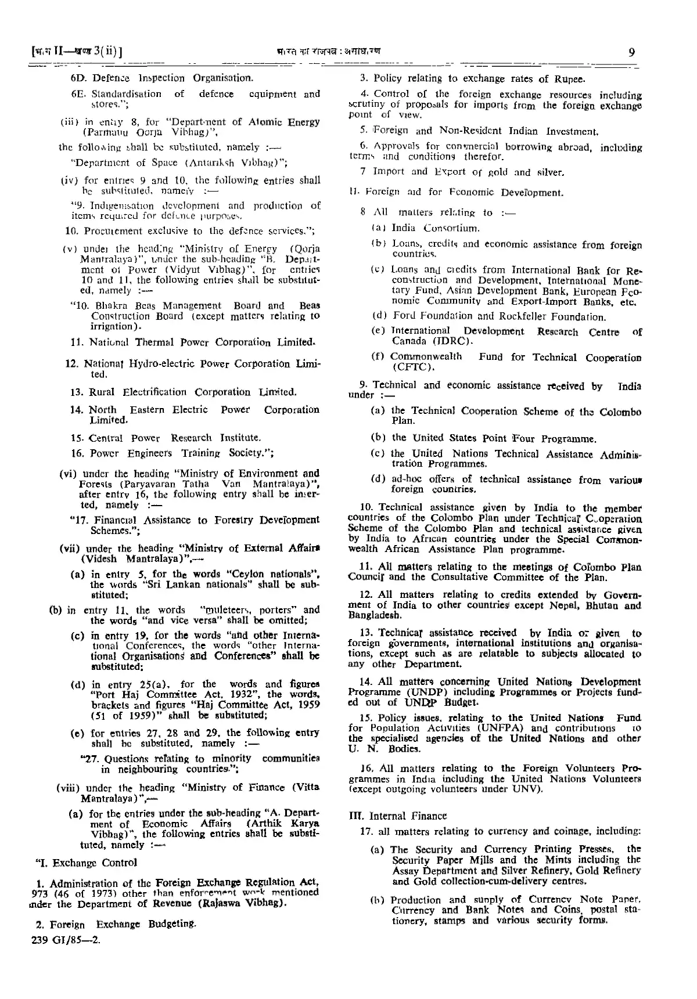
1314151617181920212223Schedule 2 › Ministry of Defence › Department of Defence Production and Sa s › entry 8
for “Department of Atomic Energy (Parmatu Oorja Vibhag)” read “Department of Space (Antariksh Vibhag)”
not applied (the change could not be placed in the Rules as read; see How this document was read)
states inferred loose
Schedule 2 › Ministry of Defence › Department of Defence Production and Sa s › entry 9; Schedule 2 › Ministry of Defence › Department of Defence Production and Sa s › entry 10
- 9. Indigenisation development and production of items required for defence purposes.
- 10. Procurement exclusive to the defence services.
applied at schedule 2 › ministry MINISTRY OF DEFENCE (RANSHA MAN TRALAYA) › department B › entry 9 in the Rules after #177
states inferred loose
Schedule 2 › Ministry of Energy › Depart- ment of Power › entry 10; Schedule 2 › Ministry of Energy › Depart- ment of Power › entry 11
- 10. Bhakra Beas Management Board and Beas Construction Board (except matters relating to irrigation).
- 11. National Thermal Power Corporation Limited.
- 12. National Hydro-electric Power Corporation Limited.
- 13. Rural Electrification Corporation Limited.
- 14. North Eastern Electric Power Corporation Limited.
- 15. Central Power Research Institute.
and 1 more
- 16. Power Engineers Training Society.
applied at schedule 2 › ministry MINISTRY OF ENERGY › department B › entry 10 in the Rules after #177
after Schedule 2 › Ministry of Environment and Forests › entry 16
- 17. Financial Assistance to Forestry Development Schemes.
applied at schedule 2 › ministry MINISTRY OF ENVIRONMENT AND FORESTS › department DEPARTMENT OF ENVIRONMENT, FORESTS AND WILD… in the Rules after #177
Schedule 2 › Ministry of External Affairs › entry 5
for “Ceylon nationals” read “Sri Lankan nationals”
applied at schedule 2 › ministry MINISTRY OF EXTERNAL AFFAIRS › entry 5 in the Rules after #177
Schedule 2 › Ministry of External Affairs › entry 11
for “muleteers, porters” read “”
applied at schedule 2 › ministry MINISTRY OF EXTERNAL AFFAIRS › entry 11 in the Rules after #177
Schedule 2 › Ministry of External Affairs › entry 11
for “and vice versa” read “”
applied at schedule 2 › ministry MINISTRY OF EXTERNAL AFFAIRS › entry 11 in the Rules after #177
Schedule 2 › Ministry of External Affairs › entry 19
for “and other Interna- tional Conferences” read “other Interna- tional Organisations and Conferences”
applied at schedule 2 › ministry MINISTRY OF EXTERNAL AFFAIRS › entry 19 in the Rules after #177
Schedule 2 › Ministry of External Affairs › entry 25 › item a
for “Port Haj Committee Act, 1932” read “Haj Committee Act, 1959 (51 of 1959)”
applied at schedule 2 › ministry MINISTRY OF EXTERNAL AFFAIRS › entry 25 › item a in the Rules after #177
Schedule 2 › Ministry of External Affairs › entry 27; Schedule 2 › Ministry of External Affairs › entry 28; Schedule 2 › Ministry of External Affairs › entry 29
- 27. Questions relating to minority communities in neighbouring countries.
applied at schedule 2 › ministry MINISTRY OF EXTERNAL AFFAIRS › entry 27 in the Rules after #177
Schedule 2 › Ministry of Finance › Depart- ment of Economic Affairs
- I. Exchange Control
- 1. Administration of the Foreign Exchange Regulation Act 973 (46 of 1973) other than enforcement work mentioned nder the Department of Revenue (Rajaswa Vibhag).
- 2. Foreign Exchange Budgeting. .
- 3. Policy relating to exchange rates of Rupee.
- 4. Control of the foreign exchange resources including scrutiny of proposals for imports from the foreign exchange point of view.
- 5. Foreign and Non-Resident Indian Investment.
and 94 more
- 6. Approvals for con•mercial borrowing abroad, including terms and conditions therefor.
- 7. Import and Export of gold and silver.
- II. Foreign aid for Fconomic Development.
- 8. All matters relating to :
- a. India Consortium.
- b. Loans, credits and economic assistance from foreign countries.
- c. Loans and credits from International Bank for Reconstruction and Development, International Monetary Fund, Asian Development Bank, European Fçonomic Community and Export-Import Banks, etc.
- d. Ford Foundation and Rockfeller Foundation.
- e. International Development Research Centre of Canada (IDRC).
- f. Commonwealth Fund for Technical Cooperation (CFTC).
- 9. Technical and economic assistance received by India under :-
- a. the Technical Cooperation Scheme of the Colombo Plan.
- b. the United States Point Four Programme
- c. the United Nations Technical Assistance Administration Programmes.
- d. ad-hoc offers of technical assistance from variou foreign countries
- 10. Technical assistance given by India to the member countries of the Colombo Plan under Technical Cooperation Scheme of the Colombo Plan and technical assistance given by India to African countries under the Special Commonwealth African Assistance Plan programme.
- 11. All matters relating to the meetings of Colombo Plan Council and the Consultative Committee of the Plan.
- 12. All matters relating to credits extended by Government of India to other countries except Nepal, Bhutan and Bangladesh.
- 13. Technicar assistance received by India or given to foreign governments, international institutions and organisations, except such as are relatable to subjects allocated to any other Department.
- 14. All matters concerning United Nations Development Programme (UNDP) including Programmes or Projects funded out of UNDP Budget.
- 15. Policy issues, relating to the United Nations Fund for Population Activities (UNFPA) and contributions IO the specialised agencies of the United Nations and other
- U. N. Bodies.
- 16. All matters relating to the Foreign Volunteers Programmes in India including the United Nations Volunteers (except outgoing volunteers under UNV).
- III. Internal Finance
- 17. all matters relating to currency and coinage, including:
- a. The Security and Currency Printing Presses, the Security Paper Mills and the Mints including the Assay Department and Silver Refinery, Gold Refinery and Gold collection-cum-delivery centres.
- b. Production and supply of Currency Note Paper Currency and Bank Notes and Coins, postal stationery, stamps and various security forms.
- 18. Functions of the Treasurer of Charitable Endowments for India.
- 19. Administration of Securities Contracts (Regulation) Act 1956 (42 of 1956).
- 20. Regulation and development of Stock Exchanges.
- 21. Control over the Issues of Capital by Joint Stock Companies.
- 22. New Investments and Securities for mobilising resources from the Capital Markets.
- 23. Investment policy including investment policy of Life Insurance Corporation of India, Unit Trust of India and General Insurance Corporation of India
- 24. Investment pattern for Employees' Provident Fund and other like Provident Funds.
- IV. Budget
- 25. Ways and Means.
- 26. Prepartion of Central Budget other than Railway Budget including supplementary/excess giants and when a proclamation by the President as to failure of Constitutional machinery is in operation in relation to a State or a Union tritory, preparation of the Budget of such State or Union tci ritory.
- 28. Market Borrowing Programme of Central and State Governments and Government Guaranteed Institutions.
- 28. Floatation of Market Loans by Central Government and issue and discharge of Treasurybills.
- 29. Administration of the Public Debt Act, 1944 (18 of 1944).
- 30. Fixation of interest rates for Central Government's borrowings and lending.
- 31. Accounting and audit procedures includings classification of transactions. ]
- 32. Financial matters relating to Partition, Federal Financial integration and Reorganisation of States.
- 33. Contingency Fund of India and Administration of the Contingency Fund of India Act, 1950 (49 of 1950).
- 34. Monitoring budgetary position of Central Government.
- 35. Sterling Pensions--Transfer of responsibility of U.K. Government and actual calculation of the liability involved. - 36. Public Provident Fund Scheme.
- 37. Finance Commission.
- 38. Resources of Five Year and Annual Plans.
- 39. National Deposit Scheme, Special Deposit Schemes Compulsory Deposit Scheme, other Deposit Schemes of Central Government.
- 40. Small Savings, including the administration of the National Savings Organisation.
- 41. Duties and powers of the Comptroller and Auditor General.
- 42. Laying of Audit Reports before the Parliament under article 151 of the Constitution.
- 43. Financial emergency.
- V. Miscellaneous Acts
- 44. Government Savings Bank Act, 1873 (5 of 1873).
- 45. Section 20 of the Indian Trusts Act, 1882 (2 of 1882) dealing with investments.
- 46. Metal Tokens Act, 1889 (1 of 1889).
- 47. Charitable Endowments Act, 1890 (6 of 1890).
- 48. Indian Coinago Act, 1906 (3 of 1906).
- 49. Indian Securities Act, 1920 (10 of 1920).
- 50. Currency Ordinance 1940 (4 of 1940).
- 51. International Monetary Fund and Bank Act, 1945.
- 52. Capital Issues (Control) Act, 1947 (29 of 1947).
- 53. Finance Commission (Miscellaneous Provisions) Act 1951 (33 of 1951).
- 54. Government Savings Certificates Act, 1959 (46 of 1959).
- 55. Compulsory Deposit Scheme Act, 1963 (21 of 1963).
- 56. Unit Trust of India Act, 1963 (52 of 1963).
- 57. Legal Tender (Inscribed Notes) Act, 1964 (28 of 1964).
- 58. Asian Development Bank Act, 1966 (18 of 1966).
- 59. Public Provident Fund Act, 1968 (23 of 1968).
- 60. Small Coins (Offences) Act, 1971 (52 of 1971).
- 61. Comptroller and Auditor General's (Dutics, Powers and Conditions of Service) Act, 1971 (56 of 1971).
- 62. Additional Emoluments (Compulsory Deposit) Act 1974 (37 of 1974).
- 63. African Development Fund Act, 1982 (1 of 1982).
- 64. African Development Bank Act, 1983 (13 of 1983).
- VI. Insurance Division
- 65. Policy relating to general insurance; administration of the Insurance Act, 1938 (4 of 1938) and General Insurance Business (Nationalisation) Act, 1972 (57 of 1972); Subsidiaries of the General Insurance Corporation.
- 66. Policy relating to life insurance; nationalisation of the Life Insurance Business; Administration of the Life Insurance Corporation Act, 1956 (31 of 1956); Life Insurance Tribunal.
- 67. Controller of Insurance.
- 68. The responsibility of the Central Government relating to matters concerning centrally administered areas in respect of any of the entries from 65 to 67 above.
- VII. Management of the Indian Economic Service
- 69. Centralised aspects of managing the Indian Economic Service and all matters pertaining to training, career planning and manpower planning for that service.
- VIII. Economic Advice
- 70. Advice on matters which have a bearing on internal and external aspects of economic management including prices.
- 71. Credit. fiscal and monetary policies.
- IX. Banking
- 72. All Indian banks, whether nationalised or not.
- 73. All foreign banks so far as their operations in India are concerned.
- 74. All matters relating to the Reserve Bank of India.
- 75. All matters relating to Cooperative Banking.
- 76. All matters relating to National Bank for Agricultur and Rural Development and long term financial institution excluding Unit Trust of India, Life Tosurance Corporation General Insurance Corporation.
- 77. Chit Fund and other non-banking companies accepting deposits.
- 78. Other matters relating to Banking in India.
- 79. Administration of all statutes, regulation and other laws connected with entries from 72 to 78.
applied at schedule 2 › ministry MINISTRY OF FINANCE › department A in the Rules after #177
read page break
Page 10 of 14
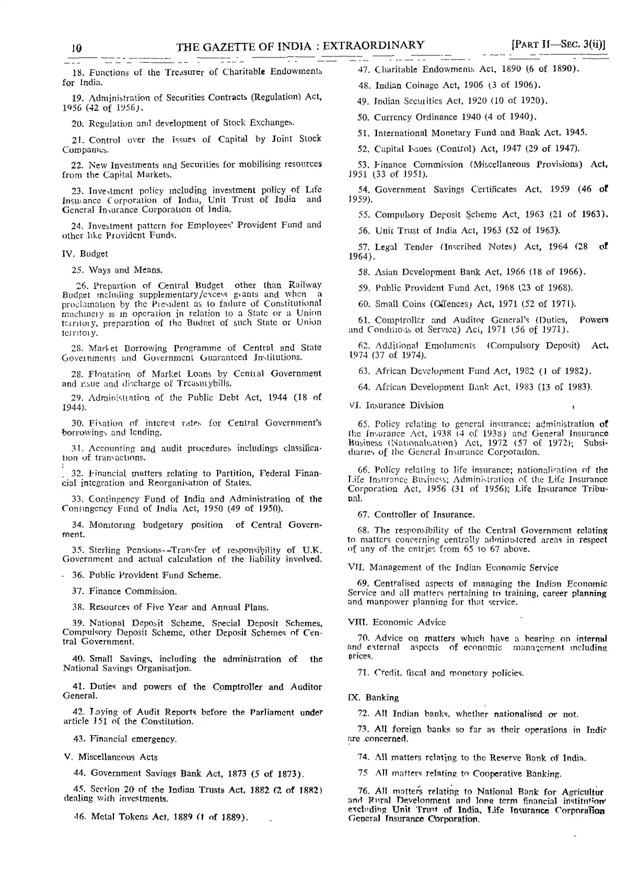
Page 11 of 14
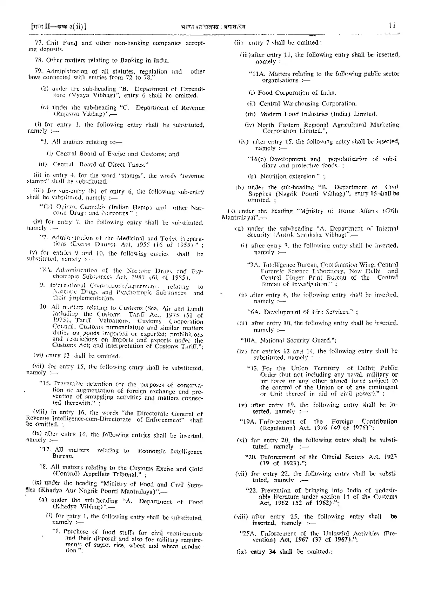
242526272829303132333435363738394041424344454647Schedule 2 › Ministry of Finance › Department of Expendi- ture › entry 6
applied at schedule 2 › ministry MINISTRY OF FINANCE › department B › entry 6 in the Rules after #177
Schedule 2 › Ministry of Finance › Department of Revenue › entry 1
- 1. All matters relating to-
- i. Central Board of Excise and Customs; and
- i. Central Board of Direct Taxes.
applied at schedule 2 › ministry MINISTRY OF FINANCE › department C › entry 1 in the Rules after #177
Schedule 2 › Ministry of Finance › Department of Revenue › entry 4
for “stamps” read “tevenue stamps”
applied at schedule 2 › ministry MINISTRY OF FINANCE › department C › entry 4 in the Rules after #177
Schedule 2 › Ministry of Finance › Department of Revenue › entry 6 › item b
- b. Opium, Cannabis (Indian Hemp) und other Narcouc Drugs and Narcotics
applied at schedule 2 › ministry MINISTRY OF FINANCE › department C › entry 6 › item b in the Rules after #177
Schedule 2 › Ministry of Finance › Department of Revenue › entry 7
- 7. Administration of the Medicinal and Toilet Preparations (Excise Duors) Act, 1955 (16 of 1955)
applied at schedule 2 › ministry MINISTRY OF FINANCE › department C › entry 7 in the Rules after #177
Schedule 2 › Ministry of Finance › Department of Revenue › entry 9; Schedule 2 › Ministry of Finance › Department of Revenue › entry 10
- 8A. Adimistration of the Nototic Drugs and Psychotropic Subtances Act, 1985 (61 of 1935).
- 9. International Conventions/agicomunis relating to Nucolic Dings and Psychotropic Substances and their implementation.
- 10. All matters relating to Customs (Sca, Air und Land) including the Customs Tariff Act, 1975 51 of 1975), Tard Valuations, Customs Cooperation Council, Customs nomenclature and similar matters duties on goods imported or exported; prohibitions and restrictions on imports and exports under the…
applied at schedule 2 › ministry MINISTRY OF FINANCE › department C › entry 9 in the Rules after #177
Schedule 2 › Ministry of Finance › Department of Revenue › entry 13
applied at schedule 2 › ministry MINISTRY OF FINANCE › department C › entry 13 in the Rules after #177
Schedule 2 › Ministry of Finance › Department of Revenue › entry 15
- 15. Preventive detention for the purposes of conservation or augmentation of foreign exchange and prevention of smuggling activities and matters connected therewith.
applied at schedule 2 › ministry MINISTRY OF FINANCE › department C › entry 15 in the Rules after #177
Schedule 2 › Ministry of Finance › Department of Revenue › entry 16
for “the Directorate General of Revenue Intelligence-cum-Directorate of Enforcement” read “”
not applied (the change could not be placed in the Rules as read; see How this document was read)
after Schedule 2 › Ministry of Finance › Department of Revenue › entry 16
- 17. All matters relating to Economic Intelligence Bureau.
- 18. All matters relating to the Customs Excise and Gold (Control) Appellate Tribunal.
applied at schedule 2 › ministry MINISTRY OF FINANCE › department C › entry 17 in the Rules after #177
Schedule 2 › Ministry of Food and Civil Supp- fies › Department of Food › entry 1
- 1. Purchase of food stuffs for civil requirements and their disposal and also for military requirements of sugar, rice, wheat and wheat production
applied at schedule 2 › ministry MINISTRY OF FOOD AND CIVIL SUPPLIES (KHADYA AUR NAGRIK POORTI MANTRA- LAYA) › department A ›… in the Rules after #177
states inferred loose
Schedule 2 › Ministry of Food and Civil Supp- fies › Department of Food › entry 7
applied at schedule 2 › ministry MINISTRY OF FOOD AND CIVIL SUPPLIES (KHADYA AUR NAGRIK POORTI MANTRA- LAYA) › department A ›… in the Rules after #177
states inferred loose
after Schedule 2 › Ministry of Food and Civil Supp- fies › Department of Food › entry 11
- 11A. Matters relating to the following public sector organisations -
- i. Food Corporation of India.
- ii. Central Warchousing Corporation. (1) Modern Food Industries (India) Limited.
- iv. North Fastern Regional Agricultural Marketing Corporation Limited.
applied at schedule 2 › ministry MINISTRY OF FOOD AND CIVIL SUPPLIES (KHADYA AUR NAGRIK POORTI MANTRA- LAYA) › department A ›… in the Rules after #177
states inferred loose
after Schedule 2 › Ministry of Food and Civil Supp- fies › Department of Food › entry 15
- 16.
- a. Development and popularisation of subsidiary and protective foods.
- b. Nutrition extension
applied at schedule 2 › ministry MINISTRY OF FOOD AND CIVIL SUPPLIES (KHADYA AUR NAGRIK POORTI MANTRA- LAYA) › department A ›… in the Rules after #177
states inferred loose
Schedule 2 › Ministry of Food and Civil Supp- fies › Department of Civil Supplies › entry 15
applied at schedule 2 › ministry MINISTRY OF FOOD AND CIVIL SUPPLIES (KHADYA AUR NAGRIK POORTI MANTRA- LAYA) › department B ›… in the Rules after #177
states inferred loose
after Schedule 2 › Ministry of Home Affairs › Department of Internal Security › entry 3
- 3A. Intelligence Burean, Coordination Wing, Central Forensic Science Laboratory, New Delhi and Central Finger Print Bureau of the Contral Bureau of Investigation.
applied at schedule 2 › ministry MINISTRY OF HOME AFFAIRS › department A › group_heading I › entry 3A in the Rules after #177
after Schedule 2 › Ministry of Home Affairs › Department of Internal Security › entry 6
- GA. Development of Fire Services.
applied at schedule 2 › ministry MINISTRY OF HOME AFFAIRS › department A › group_heading I › entry 6 in the Rules after #177
after Schedule 2 › Ministry of Home Affairs › Department of Internal Security › entry 10
- 10A. National Security Guard.
applied at schedule 2 › ministry MINISTRY OF HOME AFFAIRS › department A › group_heading I › entry 10A in the Rules after #177
Schedule 2 › Ministry of Home Affairs › Department of Internal Security › entry 13; Schedule 2 › Ministry of Home Affairs › Department of Internal Security › entry 14
- 13. For the Union Territory of Delhi Public Order (but not including any naval, military or air force or any other armed force subject to the control of the Union or of any contingent or Unit thereof in aid of civil power).
applied at schedule 2 › ministry MINISTRY OF HOME AFFAIRS › department A › group_heading II › entry 13 in the Rules after #177
after Schedule 2 › Ministry of Home Affairs › Department of Internal Security › entry 19
- 19A. Inforcement of the Foreign Contribution (Regulation) Act, 1976 (49 of 1976)
applied at schedule 2 › ministry MINISTRY OF HOME AFFAIRS › department A › group_heading II › entry 19A in the Rules after #177
Schedule 2 › Ministry of Home Affairs › Department of Internal Security › entry 20
- 20. Enforcement of the Official Secrets Act, 1923 (19 of 1923).
applied at schedule 2 › ministry MINISTRY OF HOME AFFAIRS › department A › group_heading II › entry 20 in the Rules after #177
Schedule 2 › Ministry of Home Affairs › Department of Internal Security › entry 22
- 22. Prevention of bringing into India of undesirable literature under section 11 of the Customs Act, 1962 (52 of 1962).
applied at schedule 2 › ministry MINISTRY OF HOME AFFAIRS › department A › group_heading II › entry 22 in the Rules after #177
after Schedule 2 › Ministry of Home Affairs › Department of Internal Security › entry 25
- 25A. Enforcement of the Unlawful Activities (Prevention) Act, 1967 (37 of 1967).
applied at schedule 2 › ministry MINISTRY OF HOME AFFAIRS › department A › group_heading II › entry 25A in the Rules after #177
Schedule 2 › Ministry of Home Affairs › Department of Internal Security › entry 34
applied at schedule 2 › ministry MINISTRY OF HOME AFFAIRS › department A › group_heading II › entry 34 in the Rules after #177
Page 12 of 14
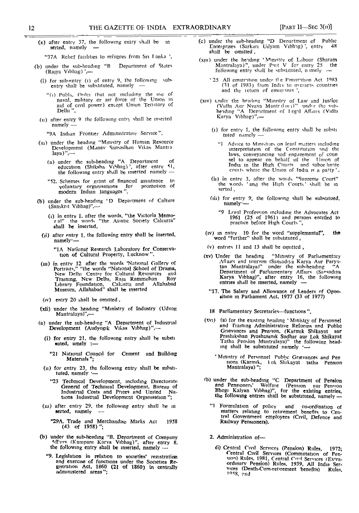
48495051525354555657585960616263646566676869after Schedule 2 › Ministry of Home Affairs › Department of Internal Security › entry 37
- 37A Relief facilities to refugees from Sri I anka
applied at schedule 2 › ministry MINISTRY OF HOME AFFAIRS › department A › group_heading III › entry 37 in the Rules after #177
Schedule 2 › Ministry of Home Affairs › Department of States › entry 9 › item 1
- (1) Public Order (but not including the use of naval, military or air force of the Union in aid of civil power) except Union Teritory of Delhi
not applied (the change could not be placed in the Rules as read; see How this document was read)
after Schedule 2 › Ministry of Home Affairs › Department of States › entry 9
- 9A Indian Frontier Administrative Service
applied at schedule 2 › ministry MINISTRY OF HOME AFFAIRS › department B › group_heading III › entry 9 in the Rules after #177
after Schedule 2 › Ministry of Human Resource Development › Department of education › entry 51
- 52. Schemes for grant of financial assistance to voluntary organisations for promotion of modern Indian languages
applied at schedule 2 › ministry MINISTRY OF HUMAN RESOURCE DEVELOP- MENT › department A › entry 52 in the Rules after #177
Schedule 2 › Ministry of Human Resource Development › Department of Culture › entry 1
for “the Victoria Memo- ral” read “the Victoria Memo- ral the Asiatic Society Calcutta”
not applied (the change could not be placed in the Rules as read; see How this document was read)
after Schedule 2 › Ministry of Human Resource Development › Department of Culture › entry 1
- 1A National Research Laboratory for Conservation of Cultural Property, Lucknow
applied at schedule 2 › ministry MINISTRY OF HUMAN RESOURCE DEVELOP- MENT › department D › entry 1 in the Rules after #177
Schedule 2 › Ministry of Human Resource Development › Department of Culture › entry 12
for “National Gallery of Portraits,” read “National Gallery of Portraits, National School of Drama, New Delhi Centre for Cultural Resources and Training, New Delhi, Raja Rammohan Roy Library Foundation, Calcutta and Allahabad Museum, Allahabad”
applied at schedule 2 › ministry MINISTRY OF HUMAN RESOURCE DEVELOP- MENT › department D › entry 12 in the Rules after #177
Schedule 2 › Ministry of Human Resource Development › Department of Culture › entry 20
applied at schedule 2 › ministry MINISTRY OF HUMAN RESOURCE DEVELOP- MENT › department D › entry 20 in the Rules after #177
Schedule 2 › Ministry of Industry › Department of Industrial Development › entry 21
- 21 National Council for Cement and Building Materials
applied at schedule 2 › ministry MINISTRY OF INDUSTRY › department A › group_heading III › entry 21 in the Rules after #177
Schedule 2 › Ministry of Industry › Department of Industrial Development › entry 23
- 23 Technical Development, including Directorate General of Technical Development, Bureau of Industrial Costs and Prices and United Nations Industrial Development Organisation
applied at schedule 2 › ministry MINISTRY OF INDUSTRY › department A › group_heading III › entry 23 in the Rules after #177
after Schedule 2 › Ministry of Industry › Department of Industrial Development › entry 29
- 29A. Trade and Merchandise Marks Act 1958 (43 of 1958)
applied at schedule 2 › ministry MINISTRY OF INDUSTRY › department A › group_heading V › entry 29A in the Rules after #177
after Schedule 2 › Ministry of Industry › Department of Company Affurs › entry 8
- 9. Legislation in relation to societies' registration and exercise of functions under the Societies Registration Act, 1860 (21 of 1860) in centrally administered areas
applied at schedule 2 › ministry MINISTRY OF INDUSTRY › department B › entry 9 in the Rules after #177
states inferred loose
Schedule 2 › Ministry of Industry › Department of Public Enterprises › entry 48
applied at schedule 2 › ministry MINISTRY OF INDUSTRY › department D › entry 48 in the Rules after #177
Schedule 2 › Ministry of Labour › Pait V › entry 25
- 25 All emigration under the Fmigration Act 1983 (31 of 1983) from India to overseas countries and the return of emigrants
applied at schedule 2 › ministry MINISTRY OF LABOUR › part V › entry 25 in the Rules after #177
Schedule 2 › Ministry of Law and Justice › Department of Iegal Affans › entry 1
- 1 Advice to Ministries on legal matters including interpretation of the Constitution and the laws, conveyancing and engagement of coun sel to appear on behalf of the Union of India in the High Courts and subor linnite couts where the Union of India 19 a party
applied at schedule 2 › ministry MINISTRY OF LAW AND JUSTICE › department A › entry 1 in the Rules after #177
states inferred loose
Schedule 2 › Ministry of Law and Justice › Department of Iegal Affans › entry 3
for “Supreme Court” read “Supreme Court and the High Courts”
applied at schedule 2 › ministry MINISTRY OF LAW AND JUSTICE › department A › entry 3 in the Rules after #177
states inferred loose
Schedule 2 › Ministry of Law and Justice › Department of Iegal Affans › entry 9
- 9 Lepal Profession including the Advocates Act 1961 (25 of 1961) and persons entitled to practice before High Courts
applied at schedule 2 › ministry MINISTRY OF LAW AND JUSTICE › department A › entry 9 in the Rules after #177
states inferred loose
Schedule 2 › Ministry of Law and Justice › Department of Iegal Affans › entry 10
for “supplemental” read “further”
applied at schedule 2 › ministry MINISTRY OF LAW AND JUSTICE › department A › entry 10 in the Rules after #177
states inferred loose
Schedule 2 › Ministry of Law and Justice › Department of Iegal Affans › entry 11; Schedule 2 › Ministry of Law and Justice › Department of Iegal Affans › entry 13
applied at schedule 2 › ministry MINISTRY OF LAW AND JUSTICE › department A › entry 11 in the Rules after #177
states inferred loose
after Schedule 2 › Ministry of Parliamentary Aflairs and tourism › Department of Parliamentary Affairs › entry 16
- 17. The Salary and Allowance of Leaders of Opposition in Parliament Act, 1977 (33 of 1977)
- 18. Parliamentary Secretarics-functions
applied at schedule 2 › ministry MINISTRY OF PARLIAMENTARY AFFAIRS AND TOURISM › department A › entry 17 in the Rules after #177
states inferred loose
Schedule 2 › Ministry of Personnel and Training Administrative Reforms and Public Grievances and Pension
- Ministry of Personnel Public Grievances and Pen sions (Karmik, lok Shikayat tatha Pension Mantralaya)
applied at schedule 2 › ministry Ministry of Personnel Public Grievances and Pen sions (Karmik, lok Shikayat tatha Pension… in the Rules after #177
Schedule 2 › Ministry of Personnel Public Grievances and Pen sions › Department of Pension and Pensioners' Welfare
- 1 Formulation of policy and co-ordination of matters relating to retirement benefits to Central Government employees (Civil, Defence and Railway Pensioners).
- 2. Administration of-
- i. Central Civil Services (Pension) Rules, 1972 Central Civil Services (Commutation of Pension) Rules, 1981, Central Civil Services (Extraordinary Pension) Rules, 1939, All India Services (Death-Cum-retirement benefits) Rules 1958, and [भाग II-- 3 ( 11 ) ]
- ii. any other scheme relating to Central Government pensioners, entrusted to the Department.
- 7. Pension structure and relief to pensioners.
- 4. New facilities or fringe benefits to the Central Government pensioners.
and 3 more
- 5. Matters relating to amendment to, or relaxation of Pension Rules or any other rule concerning retirement benefits.
- 6. Policy and co-ordination relating to welfare of Central Government pensioners.
- NOTE. The action in respect of 3 above shall be subject to the concurrence of Ministry of Finance. Action in respect of other matters involving recurring financial implications by way of relaxation or liberalisation of any rule shall be subject to guidelines, as agreed to between the Department of…
applied at schedule 2 › ministry Ministry of Personnel Public Grievances and Pen sions (Karmik, lok Shikayat tatha Pension… in the Rules after #177
read page break
Page 13 of 14
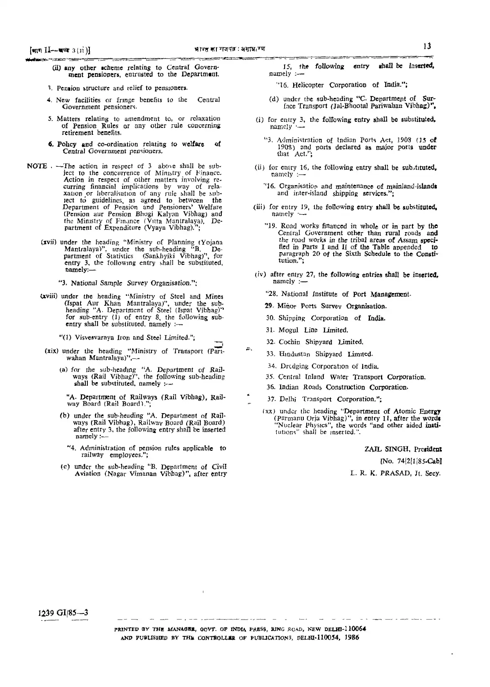
70717273747576777879Schedule 2 › Ministry of Planning › De- partment of Statistics › entry 3
- 3. National Sample Survey Organisation.
applied at schedule 2 › ministry MINISTRY OF PLANNING › department B › entry 3 in the Rules after #177
Schedule 2 › Ministry of Steel and Mines › Department of Steel › entry 8 › item 1
- (1) Visvesvaraya Iron and Steel Limited.
applied at schedule 2 › ministry MINISTRY OF STEEL AND MINES › department A › entry 8 › item 1 in the Rules after #177
Schedule 2 › Ministry of Transport › Department of Rail- ways
- A. Department of Railways (Rail Vibhag), Railway Board (Rail Board).
applied at schedule 2 › ministry MINISTRY OF TRANSPORT › department A in the Rules after #177
after Schedule 2 › Ministry of Transport › Department of Rail- ways (Rail Vibhag), Railway Board › entry 3
- 4. Administration of pension rules applicable to railway employees.
applied at schedule 2 › ministry MINISTRY OF TRANSPORT › department A › entry 4 in the Rules after #177
after Schedule 2 › Ministry of Transport › Department of Civil Aviation › entry 15
- 16. Helicopter Corporation of India.
applied at schedule 2 › ministry MINISTRY OF TRANSPORT › department B › entry 16 in the Rules after #177
Schedule 2 › Ministry of Transport › Department of Sur- face Transport › entry 3
- 3. Administration of Indian Ports Act, 1908 (15 of 1908) and ports declared as major ports under that Act.
applied at schedule 2 › ministry MINISTRY OF TRANSPORT › department C › entry 3 in the Rules after #177
Schedule 2 › Ministry of Transport › Department of Sur- face Transport › entry 16
- 16. Organisation and maintenance of mainland-islands and inter-island shipping services.
applied at schedule 2 › ministry MINISTRY OF TRANSPORT › department C › entry 16 in the Rules after #177
Schedule 2 › Ministry of Transport › Department of Sur- face Transport › entry 19
- 19. Road works financed in whole or in part by the Central Government other than rural roads and the road works in the tribal areas of Assam specified in Parts I and II of the Table appended to paragraph 20 of the Sixth Schedule to the Constitution.
applied at schedule 2 › ministry MINISTRY OF TRANSPORT › department C › entry 19 in the Rules after #177
after Schedule 2 › Ministry of Transport › Department of Sur- face Transport › entry 27
- 28. National Institute of Port Management.
- 29. Miñor Ports Survey Organisation.
- 30. Shipping Corporation of India.
- 31. Mogul Line Limited.
- 32. Cochin Shipyard Limited.
- F. 33. Hindustan Shipyard Limited.
and 4 more
- 34. Dredging Corporation of India.
- 35. Central Inland Water Transport Corporation.
- 36. Indian Roads Construction Corporation.
- 37. Delhi Transport Corporation.
applied at schedule 2 › ministry MINISTRY OF TRANSPORT › department C › entry 28 in the Rules after #177
Schedule 2 › Department of Atomic Energy › entry 11
for “Nuclear Physics” read “Nuclear Physics and other aided insti- tutions”
applied at schedule 2 › ministry DEPARTMENT OF ATOMIC ENERGY › entry 11 in the Rules after #177
Page 14 of 14
How this document was read
Edits to the reading
| Date | By | Edit | Before → after |
|---|---|---|---|
| 11 November 2026 | mukundesh | word corrected | |
| 11 November 2026 | mukundesh | word corrected |
Changes placed by an inference rule
| Change | Rule | Status | What |
|---|---|---|---|
| 6 | loose | accepted | change 6: department Dep.itment of Rural Development taken for department DEPARTMENT OF RURAL DEVELOPMENT, named loosely |
| 11 | loose | accepted | change 11: department Department of Defence Production and Sa s taken for department DEPARTMENT OF DEFENCE PRODUCTION AND SUPPLIES, named loosely |
| 12 | loose | accepted | change 12: department Department of Defence Production and Sa s taken for department DEPARTMENT OF DEFENCE PRODUCTION AND SUPPLIES, named loosely |
| 12 | loose | accepted | change 12: department Department of Defence Production and Sa s taken for department DEPARTMENT OF DEFENCE PRODUCTION AND SUPPLIES, named loosely |
| 13 | loose | accepted | change 13: department Department of Defence Production and Sa s taken for department DEPARTMENT OF DEFENCE PRODUCTION AND SUPPLIES, named loosely |
| 14 | loose | accepted | change 14: department Department of Defence Production and Sa s taken for department DEPARTMENT OF DEFENCE PRODUCTION AND SUPPLIES, named loosely |
| 14 | loose | accepted | change 14: department Department of Defence Production and Sa s taken for department DEPARTMENT OF DEFENCE PRODUCTION AND SUPPLIES, named loosely |
| 34 | loose | accepted | change 34: ministry Ministry of Food and Civil Supp- fies taken for ministry MINISTRY OF FOOD AND CIVIL SUPPLIES (KHADYA AUR NAGRIK POORTI MANTRA- LAYA), named loosely |
| 35 | loose | accepted | change 35: ministry Ministry of Food and Civil Supp- fies taken for ministry MINISTRY OF FOOD AND CIVIL SUPPLIES (KHADYA AUR NAGRIK POORTI MANTRA- LAYA), named loosely |
| 36 | loose | accepted | change 36: ministry Ministry of Food and Civil Supp- fies taken for ministry MINISTRY OF FOOD AND CIVIL SUPPLIES (KHADYA AUR NAGRIK POORTI MANTRA- LAYA), named loosely |
| 37 | loose | accepted | change 37: ministry Ministry of Food and Civil Supp- fies taken for ministry MINISTRY OF FOOD AND CIVIL SUPPLIES (KHADYA AUR NAGRIK POORTI MANTRA- LAYA), named loosely |
| 38 | loose | accepted | change 38: ministry Ministry of Food and Civil Supp- fies taken for ministry MINISTRY OF FOOD AND CIVIL SUPPLIES (KHADYA AUR NAGRIK POORTI MANTRA- LAYA), named loosely |
| 59 | loose | accepted | change 59: department Department of Company Affurs taken for department DEPARTMENT OF COMPANY AFFAIRS, named loosely |
| 62 | loose | accepted | change 62: department Department of Iegal Affans taken for department DEPARTMENT OF LEGAL AFFAIRS, named loosely |
| 63 | loose | accepted | change 63: department Department of Iegal Affans taken for department DEPARTMENT OF LEGAL AFFAIRS, named loosely |
| 64 | loose | accepted | change 64: department Department of Iegal Affans taken for department DEPARTMENT OF LEGAL AFFAIRS, named loosely |
| 65 | loose | accepted | change 65: department Department of Iegal Affans taken for department DEPARTMENT OF LEGAL AFFAIRS, named loosely |
| 66 | loose | accepted | change 66: department Department of Iegal Affans taken for department DEPARTMENT OF LEGAL AFFAIRS, named loosely |
| 66 | loose | accepted | change 66: department Department of Iegal Affans taken for department DEPARTMENT OF LEGAL AFFAIRS, named loosely |
| 67 | loose | accepted | change 67: ministry Ministry of Parliamentary Aflairs and tourism taken for ministry MINISTRY OF PARLIAMENTARY AFFAIRS AND TOURISM, named loosely |
Known issues
| Change | Issue | Known as |
|---|---|---|
| 4 | change 4: the words to substitute are not in schedule 2 › ministry MINISTRY OF AGRICULTURE › department B › part I › entry 1 | Words that differ |
| 8 | change 8: the words to substitute are not in schedule 2 › ministry MINISTRY OF COMMUNICATIONS › department A › entry 3 | Words that differ |
| 13 | change 13: the words to substitute are not in schedule 2 › ministry MINISTRY OF DEFENCE (RANSHA MAN TRALAYA) › department B › entry 8 | Words that differ |
| 32 | change 32: the words to substitute are not in schedule 2 › ministry MINISTRY OF FINANCE › department C › entry 16 | Words that differ |
| 49 | change 49: no item 1 under schedule 2 › ministry MINISTRY OF HOME AFFAIRS › department B › group_heading III › entry 9 | Items |
| 52 | change 52: the words to substitute are not in schedule 2 › ministry MINISTRY OF HUMAN RESOURCE DEVELOP- MENT › department D › entry 1 | Words that differ |
From the Government of India (Allocation of Business) Rules, 1961 and their amendments, as published by the Cabinet Secretariat (cabsec.gov.in), read by orgpedia. The readings of the older scanned gazettes have known gaps.